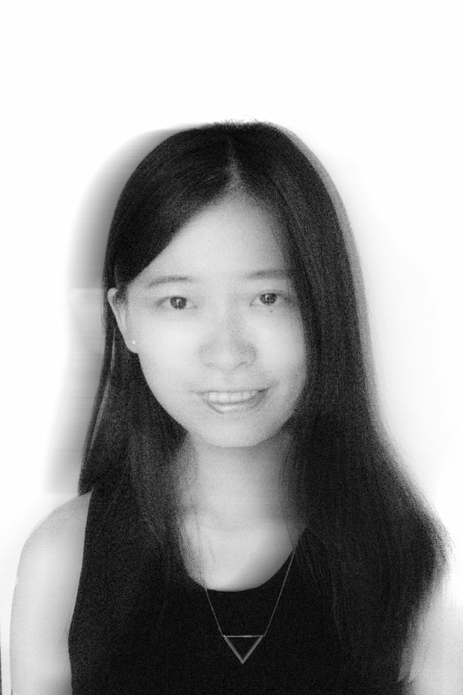
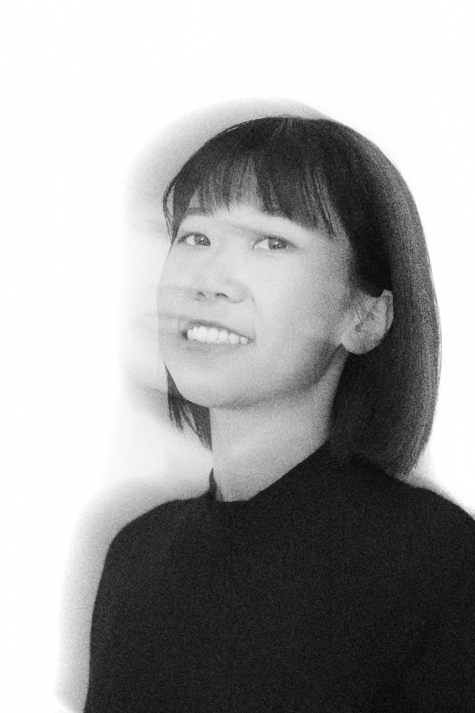

☰
At NANOO Architecture, we believe that even the smallest things hold boundless potential. Architecture is not only about building spaces—it is also an expression of ideas and emotions.
NANOO Architecture established its Shanghai studio in 2024 by Chuqi Xiao and Ran An. We offer integrated architectural and interior design services for a global clientele. Both partners bring years of experience from New York and Shanghai, with expertise spanning commercial, residential, hospitality, cultural, and office projects—both new construction and renovation.
With hands-on experience in project delivery, we ensure that every design is executed with precision, even under complex conditions. From concept to construction, we are committed to merging creativity with practicality—delivering projects that are both visionary and achievable. This is our pursuit—and our promise to every client.
"一微尘里三千界，半刹那间八万春"。
我们相信，微小之物蕴藏无限可能的智慧，建筑不仅是空间的构筑，更是理念与情感的延伸。通过这种“微中见大”的哲学思维，我们希望每一件作品都能够在平凡与伟大之间找到完美的连接，在细节中展现出无限的可能性，并赋予使用者一种深刻的、超越空间的感动。
NANOO建筑由肖楚琦和安然于2024年在上海创立。我们为全球客户提供一体化的建筑与室内设计服务。两位合伙人均拥有在纽约和上海多年的工作经验，擅长商业、住宅、酒店、文化和办公项目的设计——涵盖新建与改造。
凭借丰富的施工落地经验，我们能够在复杂的项目条件下，确保设计细节的精确实现。无论是在设计的构思阶段，还是在施工落地的执行过程中，我们始终秉承将创意与实践完美结合的原则，力求每个项目都能够在复杂与挑战中顺利落地，并呈现出最佳的效果。这是我们不断追求的目标，也是我们对客户的承诺。

Co-Founder | Lead Architect
Class I Registered Architect in China
US Registered Architect, AIA
Bachelor of Architecture, Tianjin University
Master of Architecture, Cornell University
联合创始人 | 首席建筑师
中国一级注册建筑师
美国注册建筑师, AIA
天津大学建筑学学士
康奈尔大学建筑学硕士

Co-Founder | Lead Architect
US Registered Architect, AIA
LEED GA
Bachelor of Architecture, Tianjin University
Master of Architecture, Columbia University
联合创始人 | 首席建筑师
美国注册建筑师, AIA
LEED GA认证
天津大学建筑学学士
哥伦比亚大学建筑学硕士
Email: info@nanoo-architecture.com
Address: 6th Floor, Tower C, Country Garden CenterNo. 613 Weinan Road, Yangpu District, Shanghai, China
邮箱:info@nanoo-architecture.com
地址:中国 上海市 杨浦区 渭南路613号 碧桂园中心C座6楼